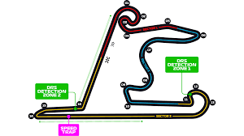

A Formula 1 versenypályái
Egy tipikus versenypálya általános jellemzője a rajt-célegyenes, amelyen felsorakoznak a versenyzők a starthoz, és ahol a kockás zászlóval leintik a versenyt. A célegyenes nem feltétlenül egyenes, előfordul, hogy enyhe íve van, mint például Monacóban. Spa-Francorchampsban is volt enyhe íve a célegyenesnek, de a 2007-es átépítések során teljesen egyenes lett. A bokszutca, ahova a versenyzők kiállnak a futam alatt gumicserére, rövid karbantartásra vagy régebben üzemanyagtöltésre (ezt jelenleg biztonsági okokból nem engedélyezik), általában a célegyenes mentén helyezkedik el. A pálya többi része széles körben változik; a legtöbb versenypályán az óramutató járásával megegyezően haladnak a versenyzők
1. Ausztrália - Melbourne
A Formula–1 ausztrál nagydíj a Formula–1 egyik nagydíja, melyet 1985 óta rendeznek meg évente. Az első 11 évben Adelaide adott helyszínt a futamoknak, 1996 óta pedig a melbourne-i Albert Parkban rendezik meg a versenyt. Az adelaide-i versenyek idényzárók voltak, két alkalommal dőlt el rajtuk az egyéni világbajnoki cím: 1986-ban Alain Prost javára a Williams pilótáival szemben, 1994-ben Michael Schumacher javára Damon Hill-lel szemben. A melbourne-i futamok viszont többnyire szezonnyitók, így az utóbbi években a legtöbb pilóta itt futotta első versenyét.

2. Bahrein - Szahír
Az első bahreini nagydíjat 2004-ben rendezték a Bahrain International Circuiton, Szahírban. Mint az összes új pályát (maláj nagydíj, kínai nagydíj, vagy a török nagydíj), ezt is a német Hermann Tilke tervezte. A pálya a sivatag közepén épült, az autóknak így problémáik lehetnek a nagy hőséggel, vagy a homokkal. A nagydíj dobogóján rózsavízzel ünnepelnek a versenyzők a pezsgő helyett, mivel az arab országban tilos alkoholtartalmú italt fogyasztani. A száraz verseny szinte garantált, hiszen itt egy évben összesen 3-5 napon esik.

3. Vietnám - Hanoi
A Formula–1 vietnámi nagydíjat 2020-tól rendezték volna meg a Hanoi Street Circuiton.[1] A 2020 elején kitört koronavírus-világjárvány miatt a 2020-as szezon első futamát törölték, majd további három futamot elhalasztottak (köztük a vietnámi versenyt is).[2] A későbbi, átalakított naptárba nem került be, így a vietnámi nagydíj csak 2021-ben mutatkozik be.

4. Kínai - Sanghaj
Shanghai International Circuit 2004 óta itt rendezték a Formula–1-es kínai nagydíjat. A pályát, amely Shanghaitól nem messze található, a német Hermann Tilke tervezte. Különlegessége a "csigakanyar", mely a legjobban egy csiga házára emlékeztet, és a vége felé egyre szűkebb a kanyarív.
5. Hollandia - Zandvoort
A Circuit Zandvoort (2017-ig Circuit Park Zandvoort) a közvetlenül az Északi-tenger partján, a holland Zandvoort település mellett található homokos tengerparti dűnék között elhelyezkedő versenypálya, amelyen 1952-től 1985-ig harmincszor rendeztek Formula–1-es versenyt. 2021-től 36 év után újra visszatér ide a mezőny.

6. Azerbajdzsán - Baku
A Baku City Circuit (azeri betűkkel: Bakı Şəhər Halqası) egy Formula–1-es versenypálya Bakuban, amely 2016-ban a Forma-1-es európai nagydíjnak adott otthont, 2017-től pedig az azeri nagydíjat rendezik itt.

7. Spanyolország - Barcelona
A Circuit de Catalunya egy versenypálya, mely Montmelóban fekszik, Barcelonától nem messze északra, Katalóniában. Építése előtt a spanyol nagydíjat Jerezben rendezték. A pályát 1991-ben nyitották meg, és még ebben a hónapban megrendezték a Forma–1-es spanyol nagydíjat.

8. Monaco - Monte-Carlo
A Circuit de Monaco városi pálya Monaco Monte-Carlo és La Condamine városrészein vezet keresztül, a Forma–1-es verseny monacói nagydíjára. A város számos utcáját lezárják, a közlekedési táblákat, és a virágágyásokat eltüntetik. Felállítják az ideiglenes boxutcát, a kerítéseket, a kerékvetőket és a nézőtereket, ezeken egyszerre 100 000 ember tud elférni. Az így kialakított pálya 3,340 km hosszú. A miniállam 2 km²-es területének szinte egészét bejárja a pálya. Több, különféle kanyar található rajta, mint pl. a hajtűkanyar Fairmont Hotelnél (egykori Loews Hotel), a Forma-1-es pályák leglassúbb kanyarja. Emellett nevezetes még a versenypálya hosszú alagútjáról, és egy sikán is található rajta, nem sokkal az alagútkijárat után.
9. Kanada - Monetreál
A Circuit Gilles Villeneuve egy igen tempós motorsport-versenypálya a kanadai Montréal városában, mely a kanadai Formula–1-es versenyzőről, Gilles Villeneuveről kapta nevét. A városi pályán rendezik meg évente a Formula–1 kanadai nagydíjat. A pálya a festői Île Notre-Dame szigeten található, melyen ha nem rendeznek éppen valamilyen versenyt, normális közútnak számít. Hossza 4,361 kilométer, és az óra járásával megegyezően fut. A sok egyenessel teli pálya egyik különlegessége a célegyenes előtti sikán mellett található Bajnokok fala (Wall of Champions), aminek 1999-ben a három világbajnok Damon Hill, Michael Schumacher és Jacques Villeneuve is nekiütközött, és mindhárman feladni kényszerültek a versenyt. A falon a "Bienvenue au Québec" felirat látható, mely magyarul "Üdvözöljük Québecben"-t jelent. A

10. Franciaország - Le Castellet
A Circuit Paul Ricard egy versenypálya Franciaországban, Le Castelletben, Marseille-tól 39 km-re keletre. 1971-től 1975-ig a páratlan, 1976-tól 1982-ig a páros években, 1983-ban, 1985-től 1990-ig, és 2018-tól[1] itt rendezik a Formula–1-es világbajnokság francia nagydíját.

11. Ausztria - Spielberg
A Red Bull Ring (eredeti neve Österreichring, 1997–2003 között A1-Ring) egy osztrák versenypálya Stájerországban. Maga a pálya Spielberg községhez tartozó területen fekszik, de bejáratai Zeltweg község közvetlen közelében vannak, ezért gyakran „zeltwegi pályaként” említik. 1997 és 2003 között rendeztek itt F1-es futamot. A pályát 2011-ben a Red Bull energiaital gyártó finanszírozásával felújították, és ismét alkalmassá tették a Forma 1-es versenyek megrendezésére, a 2014-es szezontól ismét szerepel a versenynaptárban.